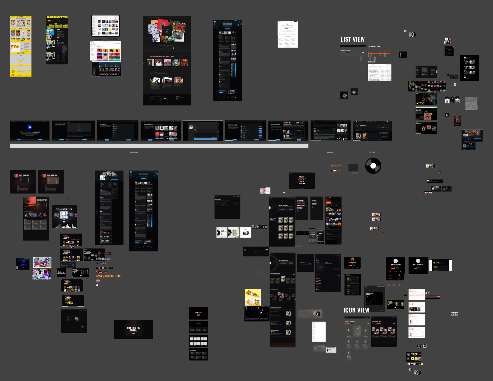
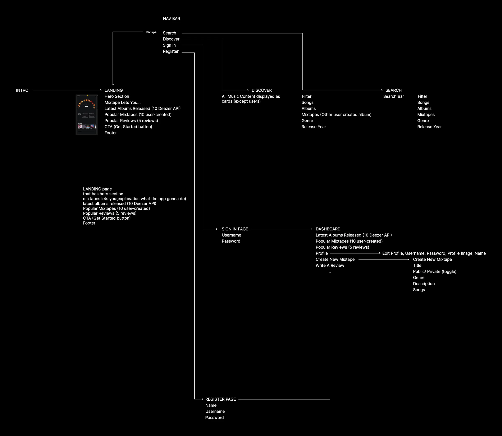
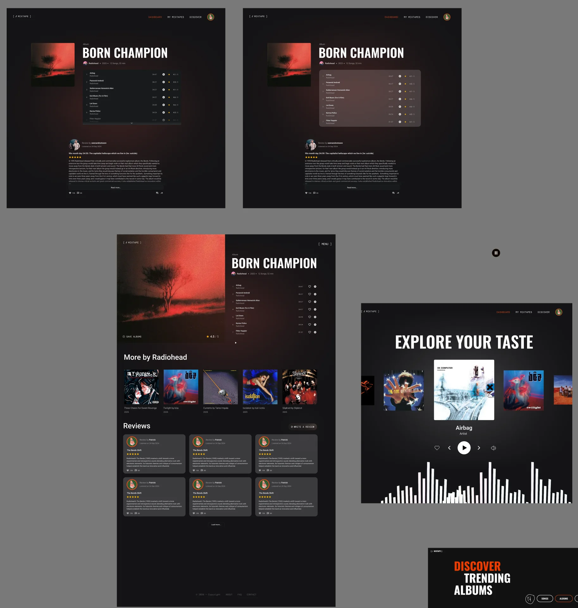
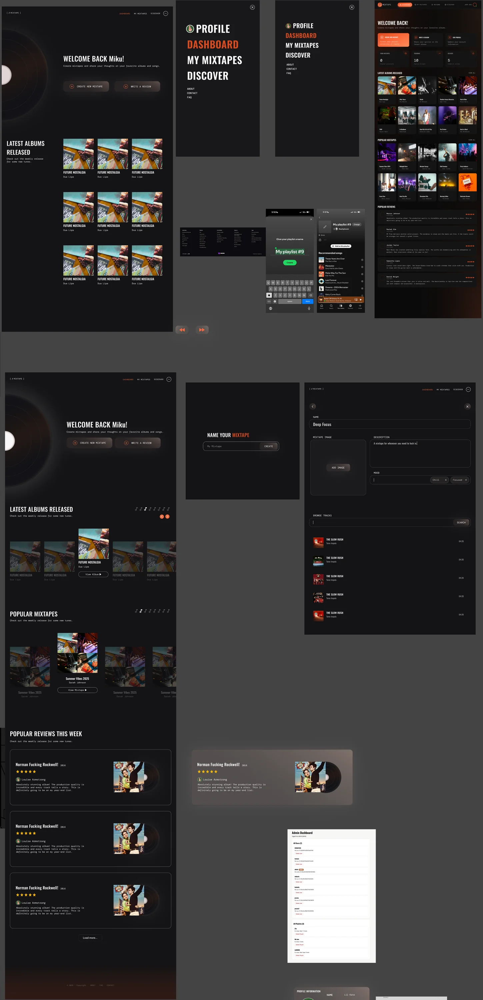
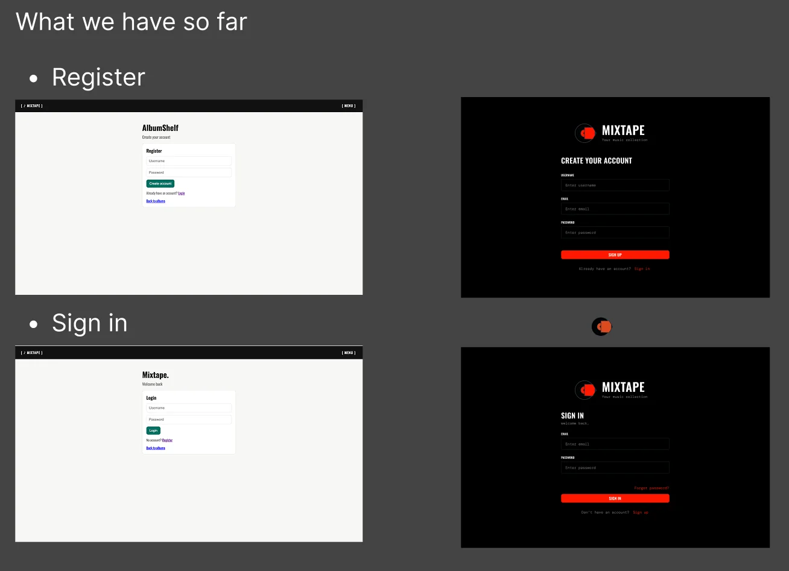
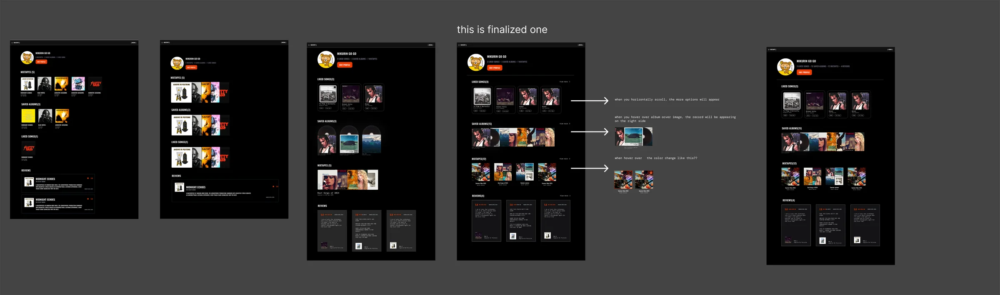

Academic Project · Mixtape
MIXTAPE
Mixtape is a music catalog web app for discovering albums, building your own mixtapes and writing reviews. It pulls real album data from the Deezer API and has separate experiences for visitors, signed in users and admins.

The project started with research into Musicboard and other music apps to see how they handle album pages, reviews and personal lists. The goal was to make browsing music feel personal and not like a database.

Before any screens were designed, every page and what it holds was mapped out. Visitors can browse, search and discover. Signing in unlocks the dashboard, profile, mixtape creation and reviews.
Most screens went through several versions in Figma before being built. Here are the ones that changed the most.

The album page went through three versions. The early ones kept the cover small next to the tracklist. The final one gives the cover art the full left side and adds more albums by the artist and reviews underneath.

The first dashboard was a welcome message with two buttons. Later versions added the spinning vinyl, the latest albums from Deezer, popular mixtapes and reviews, so signed in users land on something to explore.

The first login screens were plain white forms. They were redesigned to match the dark Mixtape look with the red accent and logo, so signing in feels like part of the app.

The profile page took five rounds of feedback in Figma. Each version moved closer to a layout that puts liked songs, saved albums and mixtapes in clear rows.
The final Mixtape app delivers a cohesive, expressive music experience that feels personal and intentional. The project strengthened my skills in full-stack development, responsive UI design, and debugging real-world cross-browser issues. The result is a platform that clearly communicates its brand personality while remaining functional, fast, and enjoyable to use on any device.
Let's collaborate on creating unique designs and functional websites. Reach out to discuss how I can contribute to your team and help bring your ideas to life.
Let's Connect